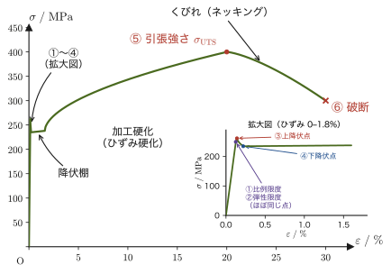
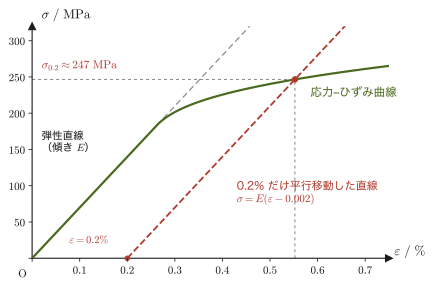
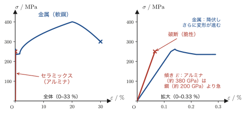
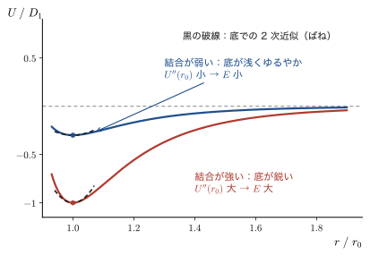
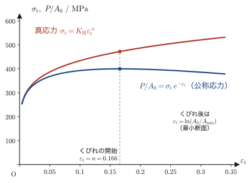

第19章フックの法則・弾性係数と材料試験
前章では，物体に力を加えたとき，物体の中に生じる「応力」$\sigma$（単位面積あたりの内力）と，物体がどれだけ変形したかを表す「ひずみ」$\varepsilon$（元の長さに対する変形量の割合）という2つの量を定義した．しかし，応力とひずみを別々に知っているだけでは，「この鋼の棒に $100\ \mathrm{MPa}$ の応力を加えたら，何 mm 伸びるのか」「このゴムのブロックにこれだけの力を加えたら，どれだけずれるのか」を計算することはできない．応力とひずみを結びつける「比例定数」が分かって初めて，力を加えたときの変形の量を予測できるようになる．
高校物理で学んだフックの法則 $F=-kx$（ばねを $x$ だけ伸ばすと $kx$ の力で引き戻される）を思い出そう．この章で学ぶのは，同じ「比例」の関係が，ばねだけでなく，あらゆる固体の変形（伸び・せん断・体積変化）についても成り立つということである．その比例定数を弾性係数（modulus of elasticity）といい，変形のしかたに応じて縦弾性係数 $E$（ヤング率）・横弾性係数 $G$・体積弾性係数 $K$ の3種類がある．さらに，実際にどれだけの応力まで材料がこの「比例」の関係を保てるのか，それを超えるとどうなるのかを調べるのが材料試験である．引張試験で得られる応力–ひずみ線図は，弾性係数だけでなく，降伏点や引張強さといった，材料の強度そのものを表す量の宝庫でもある．
本章は，望月泰英『物理学ノート 材料力学』のうち，フックの法則と3つの弾性係数，そして材料試験の入口を扱った部分にもとづく．これに，応力–ひずみ線図の全体像（弾性限度・降伏点・引張強さ・破断まで）や，公称応力と真応力の違いなど，引張試験を理解するために標準的に必要な内容を加えて，一つのまとまった章にした．
- フックの法則「弾性範囲内では応力とひずみは正比例する」と，その比例定数である弾性係数の考え方
- 縦弾性係数（ヤング率）$E=\sigma/\varepsilon$，横弾性係数 $G=\tau/\gamma$，体積弾性係数 $K=\sigma/\varepsilon_V$ の定義と，$E=l_0P/(\lambda A_0)$ のような具体的な計算式への書き換え
- 等方弾性体では $E,G,K,\nu$ のうち独立なのは2つだけであること，関係式 $G=E/\{2(1+\nu)\}$，$K=E/\{3(1-2\nu)\}$ の導出
- 材料試験の分類（静荷重試験・動荷重試験）と，引張試験の応力–ひずみ線図の読み方（比例限度・弾性限度・降伏点・引張強さ・破断）
- 公称応力・公称ひずみと真応力・真ひずみの違い，くびれ（ネッキング）が起きる理由，0.2%耐力の考え方，金属とセラミックスの応力–ひずみ挙動の違い
もとにしたノート：望月泰英『物理学ノート 材料力学』 pp. 5–6．
19.1 フックの法則
英国の物理学者フック（Robert Hooke）は，1678年，コイルばねの伸びと荷重の関係を調べる実験から，「弾性範囲内では，応力とひずみは正比例する」ことをはじめて示した．これをフックの法則（Hooke's law）という．ばねの伸び $x$ と荷重 $F$ の間に $F=kx$（$k$ はばね定数）という比例関係が成り立つことは，高校物理でおなじみだろう（高校では，ばねが物体に及ぼす復元力を $F=-kx$，ばねを伸ばすために加える力の大きさを $F=kx$ と書く．これは同じ関係を，力の向きの見方だけ変えて書いたものである）．フックが発見したのは，これと同じ形の比例関係——「力を加えると変形は力に比例して大きくなり，力を除けば元に戻る」——が，ばねという特別な部品に限らず，弾性の範囲内であれば，あらゆる固体の変形について成り立つという，もっと一般的な事実である．
前章18.3節で定義した応力 $\sigma$（単位面積あたりの内力）と，18.4節で定義したひずみ $\varepsilon$（無次元の変形の割合）を使うと，フックの法則は次のように書ける．
法則19.1 フックの法則
弾性変形の範囲内では，応力とひずみは正比例する．すなわち，
\begin{equation} \frac{\text{応力}}{\text{ひずみ}}=\text{比例定数} \label{eq:19-hooke-verbal} \end{equation}が成り立つ．この比例定数を弾性係数（modulus of elasticity）という．
式 \eqref{eq:19-hooke-verbal} の「応力」「ひずみ」に何を当てはめるかによって，弾性係数にはいくつかの種類がある——垂直応力と縦ひずみの比なら縦弾性係数，せん断応力とせん断ひずみの比なら横弾性係数，というように（19.2節で順に定義する）．どの場合でも「弾性係数が大きい」ということは，「同じ応力に対してひずみが小さい」，つまり「変形しにくい，硬い」ことを意味する．逆に弾性係数が小さい材料（ゴムなど）は，小さな応力でも大きく変形する．
イメージ：なぜ「比例」なのか
原子・分子が規則正しく並んでできている固体を，バネで互いに結ばれた質点の集まりだと思ってみよう（この描像の物理的な根拠は19.5節末の「応用」で原子間ポテンシャルから見直す）．外から力を加えて原子どうしの間隔を平衡位置からわずかにずらすと，原子間の力はその「ずれ」にほぼ比例して働き，元の位置へ戻そうとする——これはちょうど，自然長からわずかに伸縮したばねの復元力が伸縮量に比例する（フックの法則 $F=-kx$）のと同じ状況である．無数の原子どうしの微小な「ばね」の効果を，棒全体・材料全体というマクロなスケールで平均して見たものが，応力とひずみの間の比例関係である．ただし，これはあくまで変形が小さい（原子間隔のずれが小さい）範囲での近似であり，変形が大きくなると比例関係は崩れる——19.4節・19.5節で見る「比例限度」を超えた領域がこれにあたる．
例題19.1 応力とひずみからフックの法則の比例定数を求める
ある材料に垂直応力 $\sigma=150\ \mathrm{MPa}$ を加えたところ，縦ひずみ $\varepsilon=7.3\times10^{-4}$ が生じた．この材料の弾性係数（縦弾性係数）を求めよ．
解答 法則19.1（フックの法則）$\sigma/\varepsilon=\text{一定}$ より，
$$ E=\frac{\sigma}{\varepsilon}=\frac{150\times10^{6}\ \mathrm{Pa}}{7.3\times10^{-4}}\approx2.05\times10^{11}\ \mathrm{Pa}=205\ \mathrm{GPa} $$（$\mathrm{Pa}=\mathrm{N/m^2}$，ひずみは無次元量なので，弾性係数の単位は応力と同じ $\mathrm{Pa}$ になる．$205\ \mathrm{GPa}$ という値は，19.5節の表19.1 にある鋼のヤング率の代表値にほぼ一致する——この材料は鋼であると見当がつく）
19.2 縦弾性係数・横弾性係数・体積弾性係数
材料力学で扱う変形には，大きく分けて3つのタイプがある——(i) 引張・圧縮による「伸び縮み」，(ii) せん断による「ずれ」，(iii) 静水圧による「体積の変化」である（図19.2）．同じ材料でも，変形のしかたが違えば応力とひずみの比は別の値になるので，それぞれに別の弾性係数——縦弾性係数 $E$，横弾性係数 $G$，体積弾性係数 $K$——を定義する．それぞれを順に見ていこう．
19.2.1 縦弾性係数（ヤング率）$E$
定義19.1 縦弾性係数（ヤング率）
垂直応力 $\sigma$ と，その方向に生じる縦ひずみ $\varepsilon$ との比例定数 $E$ を縦弾性係数（modulus of longitudinal elasticity）という．これを最初に測定した英国の物理学者ヤング（Thomas Young）の名にちなんで，ヤング率（Young's modulus）とも呼ぶ．$E$ の単位は応力と同じ $\mathrm{Pa}$ である（ひずみ $\varepsilon$ は無次元）．
棒に引張荷重 $P$ を加えた場合で具体的に書いてみよう．断面積 $A_0$，長さ $l_0$ の棒に荷重 $P$ を加えると，18.3節の定義より垂直応力は $\sigma=P/A_0$，棒が $\lambda$ だけ伸びたとすると，18.4節の定義より縦ひずみは $\varepsilon=\lambda/l_0$ である．
導出：縦弾性係数を $P,A_0,l_0,\lambda$ で表す
定義19.1（フックの法則 $E=\sigma/\varepsilon$）に，$\sigma=P/A_0$（$P$：力，$A_0$：断面積）と $\varepsilon=\lambda/l_0$ を代入すると，
\begin{equation} E\overset{\text{フックの法則}}{=}\frac{\sigma}{\varepsilon}=\frac{P/A_0}{\lambda/l_0}=\frac{l_0}{\lambda}\cdot\frac{P}{A_0}=\frac{l_0P}{\lambda A_0} \label{eq:19-E-def} \end{equation}となる．ここで，分数を分数で割る計算は「割る数の逆数を掛ける」という中学以来のルールにしたがって，$\dfrac{P/A_0}{\lambda/l_0}=\dfrac{P}{A_0}\times\dfrac{l_0}{\lambda}$ と変形した．式 \eqref{eq:19-E-def} の右辺は，力 $P$，断面積 $A_0$，もとの長さ $l_0$，伸び $\lambda$ という，すべて実験で直接測れる量だけで書かれている——つまり，引張試験で $P$ を少しずつ増やしながら伸び $\lambda$ を測っていけば，$E$ を実験的に求められるということである．
（導出終わり）
ばね定数との関係．式 \eqref{eq:19-E-def} を $P$ について解くと，
\begin{equation} P=\frac{EA_0}{l_0}\,\lambda \label{eq:19-bar-spring} \end{equation}となり，これは高校物理のばねの式 $F=kx$ と同じ形である．つまり，断面積 $A_0$，長さ $l_0$，ヤング率 $E$ の棒は，ばね定数 $k=EA_0/l_0$ のばねとみなせる（単位は $[\mathrm{Pa\cdot m^2/m}]=[(\mathrm{N/m^2})\cdot\mathrm{m}]=\mathrm{N/m}$ で，ばね定数の単位と一致する）．棒が太い（$A_0$ が大きい）ほど，短い（$l_0$ が小さい）ほど，そして材料が硬い（$E$ が大きい）ほど，ばね定数は大きい．ばね定数 $k$ は棒の形（$A_0$ と $l_0$）にも依存する量であるのに対し，ヤング率 $E$ は材料だけで決まる量である——同じ鋼でも，太さや長さを変えれば $k$ は変わるが，$E$ は変わらない．
例題19.2 鋼線の伸びを求める
直径 $2.0\ \mathrm{mm}$，長さ $l_0=1.5\ \mathrm{m}$ の鋼線に，質量 $20\ \mathrm{kg}$ のおもりを吊るした．鋼のヤング率を $E=206\ \mathrm{GPa}$，重力加速度を $g=9.8\ \mathrm{m/s^2}$ として，鋼線の伸び $\lambda$ を求めよ．
解答 荷重は $P=mg=20\times9.8=196\ \mathrm{N}$．断面積は，直径 $d=2.0\times10^{-3}\ \mathrm{m}$ より
$$ A_0=\frac{\pi d^2}{4}=\frac{\pi\times(2.0\times10^{-3})^2}{4}\approx3.142\times10^{-6}\ \mathrm{m^2} $$式 \eqref{eq:19-E-def} を $\lambda$ について解くと $\lambda=l_0P/(EA_0)$ なので，
$$ \lambda=\frac{l_0P}{EA_0}=\frac{1.5\times196}{206\times10^{9}\times3.142\times10^{-6}}\approx\frac{294}{6.473\times10^{5}}\approx4.54\times10^{-4}\ \mathrm{m}\approx0.454\ \mathrm{mm} $$（次元の確認：$[\mathrm{m}\cdot\mathrm{N}]/[\mathrm{Pa}\cdot\mathrm{m^2}]=[\mathrm{m\,N}]/[(\mathrm{N/m^2})\cdot\mathrm{m^2}]=[\mathrm{m\,N}]/[\mathrm{N}]=\mathrm{m}$ となり左辺の単位と一致する）
19.2.2 横弾性係数 $G$
18.5節で定義したせん断ひずみ $\gamma$ は，せん断応力 $\tau$ とやはり比例の関係にある．
定義19.2 横弾性係数
せん断応力 $\tau$ とせん断ひずみ $\gamma$ の比例定数 $G$ を横弾性係数（modulus of transverse elasticity）という．剛性率（modulus of rigidity）とも呼ばれる．
\begin{equation} G=\frac{\tau}{\gamma} \label{eq:19-G-def} \end{equation}例題19.3 ゴムブロックのせん断変形
一辺 $10\ \mathrm{cm}$ の立方体のゴムブロック（上面の面積 $A=1.0\times10^{-2}\ \mathrm{m^2}$，高さ $l_0=0.10\ \mathrm{m}$，横弾性係数 $G=1.0\ \mathrm{MPa}$）の上面に，下面を固定したまま水平方向のせん断荷重 $Q=400\ \mathrm{N}$ を加えた．上面が水平にずれる量 $\lambda$ を求めよ．
解答 せん断応力は $\tau=Q/A=400/(1.0\times10^{-2})=4.0\times10^{4}\ \mathrm{Pa}$．定義19.2 の $G=\tau/\gamma$ とせん断ひずみの定義 $\gamma=\lambda/l_0$（18.5節）より，
$$ \gamma=\frac{\tau}{G}=\frac{4.0\times10^{4}}{1.0\times10^{6}}=4.0\times10^{-2} $$ $$ \lambda=\gamma\, l_0=4.0\times10^{-2}\times0.10=4.0\times10^{-3}\ \mathrm{m}=4.0\ \mathrm{mm} $$（ゴムの横弾性係数 $1.0\ \mathrm{MPa}$ は，鋼の横弾性係数（$E=206\ \mathrm{GPa}$，$\nu=0.3$ として次節の公式19.1 で $G=E/\{2(1+\nu)\}\approx79\ \mathrm{GPa}$）の約 $10^{-5}$ 倍にすぎない．そのため，わずかな力でも大きくずれる．）
19.2.3 体積弾性係数 $K$
最後に，物体の表面全体に，向きによらず一様に垂直に働く応力——たとえば水中に沈めた物体が受ける静水圧——を考える．このとき物体は伸びたり縮んだりするのではなく，全体として体積が変化する．
定義19.3 体積弾性係数
静水圧のように，物体表面に直交する方向に一様に働く垂直応力 $\sigma$ と，それによって生じる体積ひずみ $\varepsilon_V$（18.5節）との比例定数 $K$ を体積弾性係数（modulus of volumetric elasticity）という．
\begin{equation} K=\frac{\sigma}{\varepsilon_V} \label{eq:19-K-def} \end{equation}注意：符号のとり方
圧縮を負とする約束（18.3節）にしたがうと，静水圧 $p$ のもとでは各面に $\sigma=-p$ の垂直応力がはたらき，体積は減るので $\varepsilon_V=\Delta V/V\lt0$ である．したがって $K=\sigma/\varepsilon_V=(-p)/\varepsilon_V$ は，負÷負で $K\gt0$ になる．圧力 $p$（圧縮を正とする量）を使って書くなら，$K=-p/\varepsilon_V=-V\,\dd p/\dd V$ と覚えてもよい．
例題19.4 深海での球の体積収縮
海面から深さ $h=1000\ \mathrm{m}$ の海水中に，体積弾性係数 $K=226\ \mathrm{GPa}$ のアルミナ（酸化アルミニウム）製の中実球を沈めた（この $K$ は，アルミナのヤング率 $E=380\ \mathrm{GPa}$，ポアソン比 $\nu=0.22$ から，次節の公式19.2 $K=E/\{3(1-2\nu)\}$ で求めた値である）．海水の密度を $\rho=1.03\times10^{3}\ \mathrm{kg/m^3}$，重力加速度を $g=9.8\ \mathrm{m/s^2}$ として，球の体積収縮率 $|\Delta V/V|$ を求めよ（大気圧は無視してよい）．
解答 深さ $h$ での静水圧は $p=\rho gh$（高校物理の水圧の公式）である：
$$ p=\rho gh=1.03\times10^{3}\times9.8\times1000\approx1.009\times10^{7}\ \mathrm{Pa}\approx10.1\ \mathrm{MPa} $$定義19.3 の注意にあるとおり $\sigma=-p$ なので，$K=\sigma/\varepsilon_V=-p/\varepsilon_V$ より，
$$ \left|\frac{\Delta V}{V}\right|=|\varepsilon_V|=\frac{p}{K}=\frac{1.009\times10^{7}}{226\times10^{9}}\approx4.5\times10^{-5} $$体積は約 $0.0045\%$ しか収縮しない——固体の体積弾性係数は非常に大きいので，深海のような極端な環境でも体積変化はわずかであることが分かる．
19.3 発展：弾性定数の関係 — なぜ独立な弾性定数は2つだけなのか
ここまでで，等方弾性体（18.1節の定義18.2「等方体」）には4つの弾性定数——縦弾性係数 $E$，横弾性係数 $G$，体積弾性係数 $K$，ポアソン比 $\nu$——が登場した．これらは互いに無関係な4つの定数のように見えるかもしれないが，実は独立に選べるのは2つだけで，残りの2つはその2つから計算できる．この節では，その関係式 $G=E/\{2(1+\nu)\}$ と $K=E/\{3(1-2\nu)\}$ を導き，「独立な弾性定数は2つ」という事実の意味を確かめる．本節の内容は，弾性係数を自己完結して理解するために標準的に必要な内容である．
19.3.1 一般化されたフックの法則 — 複数方向の応力が同時にはたらくとき
これまでの $E,G,K$ の定義は，どれも「1方向だけに応力がはたらく単純な場合」を考えたものだった．しかし，これから見る2つの関係式を導くには，2方向または3方向に同時に垂直応力がはたらく場合のひずみを知る必要がある．そこで一度立ち止まり，フックの法則を複数方向の応力が同時にはたらく場合に拡張しておこう．
導出：一般化されたフックの法則（多軸応力下の縦ひずみ）
互いに直交する $x,y,z$ 方向に，それぞれ垂直応力 $\sigma_x,\sigma_y,\sigma_z$ が同時にはたらいている状態を考える．変形が微小である限り，18.1節の重ね合わせの原理（法則18.1．複数の外力による変形の効果は，それぞれを単独に加えたときの効果の和に等しい）が使える．$x$ 方向のひずみ $\varepsilon_x$ に対する3つの応力それぞれの寄与を，1つずつ求めて足し合わせよう．
(1) $\sigma_x$ 単独がもたらす $x$ 方向のひずみは，定義19.1（縦弾性係数）そのものにより $\sigma_x/E$ である．
(2) $\sigma_y$ 単独は，$y$ 方向には縦ひずみ $\sigma_y/E$ を生むが，それと同時に，18.4節で見たとおり，これと垂直な方向（$x$ 方向を含む）には，符号が逆でポアソン比 $\nu$ 倍の横ひずみ $-\nu(\sigma_y/E)$ を生む．
(3) 同様に $\sigma_z$ 単独は，$x$ 方向に横ひずみ $-\nu(\sigma_z/E)$ を生む．
この3つの寄与を足し合わせる（重ね合わせの原理）と，
\begin{equation} \varepsilon_x=\frac{\sigma_x}{E}-\nu\frac{\sigma_y}{E}-\nu\frac{\sigma_z}{E}=\frac{1}{E}\bigl\{\sigma_x-\nu(\sigma_y+\sigma_z)\bigr\} \label{eq:19-generalized-hooke} \end{equation}が得られる．$y,z$ 方向のひずみについても，添字を入れ替えれば同じ形の式になる．式 \eqref{eq:19-generalized-hooke} を一般化されたフックの法則という．$\sigma_y=\sigma_z=0$ とおけば，これまでどおりの単純な $\varepsilon_x=\sigma_x/E$（定義19.1）に戻ることも確かめられる．
（導出終わり）
なぜ？：足し算でよいのはなぜか
「複数の応力による変形を単純に足し合わせてよい」というのは，当たり前のようでいて，実は変形が微小であること（18.1節の「微小変形の仮定」）に支えられた近似である．もし変形が大きければ，$\sigma_y$ による変形が起きたあとの「形の変わった物体」に $\sigma_z$ が新たに加わることになり，2つの効果は単純な足し算にならない．変形が微小であれば，このような「変形どうしの干渉」の効果は，ひずみの2次以上の微小量として無視できるので，各応力の効果を独立に計算してから足し合わせることが正当化される．
19.3.2 縦弾性係数と横弾性係数の関係 $G=E/\{2(1+\nu)\}$
横弾性係数（せん断に関する弾性係数）$G$ が，実は縦弾性係数 $E$ とポアソン比 $\nu$ だけで決まってしまうことを示そう．鍵になるのは，「純粋なせん断」という変形が，別の見方をすると「45°回転した方向への引張と圧縮の組み合わせ」と同じものだという事実である．
導出：$G=E/\{2(1+\nu)\}$
ステップ1：せん断ひずみと対角線のひずみの関係．一辺 $a$ の正方形の要素（図19.4左）が，各面にせん断応力 $\tau$ を受けて（対面どうしは逆向きで，隣り合う面には，モーメントのつり合いから同じ大きさ $\tau$ がはたらく），せん断ひずみ $\gamma$（微小角，18.5節）だけ変形し，正方形が平行四辺形になる場合を考える．この平行四辺形の2本の対角線のうち，伸びるほうがどれだけ伸びるかを求めよう．変形前の正方形の頂点を $(0,0),(a,0),(a,a),(0,a)$ とし，せん断ひずみ $\gamma$ によって上辺が右へ $\gamma a$ だけずれる（$\tan\gamma\approx\gamma$，微小角近似）とすると，変形後の頂点は $(0,0),(a,0),(a+\gamma a,a),(\gamma a,a)$ になる．伸びる対角線は，鋭角をなす2つの頂点 $(0,0)$ と $(a+\gamma a,a)$ を結ぶ右上がりの線分（図の青）で，その長さの2乗は
$$ \ell^2=(a+\gamma a)^2+a^2=a^2(1+\gamma)^2+a^2=a^2\left[(1+2\gamma+\gamma^2)+1\right]\approx a^2(2+2\gamma)=2a^2(1+\gamma) $$（最後の近似で，$\gamma\ll1$ なので $\gamma^2$ の項を無視した——大学数学 第4章 4.1節で学ぶ，微小量の1次近似の考え方である）．したがって $\ell\approx\sqrt2\,a\sqrt{1+\gamma}\approx\sqrt2\,a\left(1+\dfrac{\gamma}{2}\right)$（ここでも $\sqrt{1+\gamma}\approx1+\gamma/2$ という1次近似を使った）．もとの対角線の長さは $\sqrt2\,a$ だったから，対角線方向のひずみ（伸びをもとの長さで割った量）は
\begin{equation} \varepsilon_1=\frac{\ell-\sqrt2\,a}{\sqrt2\,a}=\frac{\gamma}{2} \label{eq:19-diag-strain} \end{equation}である．対称性より，直交するもう一方の対角線（図の赤）は同じ大きさだけ縮む：$\varepsilon_2=-\gamma/2$．
ステップ2：対角線方向にはたらく垂直応力を，力のつり合いから求める．純粋せん断では，正方形の上面には右向き，下面には左向き，右面には上向き，左面には下向きに，大きさ $\tau$ のせん断応力がはたらいている（図19.4左）．この正方形を，左上 $(0,a)$ と右下 $(a,0)$ の頂点を結ぶ対角線で切り，左下の直角二等辺三角形（頂点 $(0,0),(a,0),(0,a)$．奥行きは1とする）だけを取り出そう．斜辺の長さは $\sqrt2\,a$，外向きの法線は $\bm{n}=(\bm{e}_x+\bm{e}_y)/\sqrt2$ で，これは伸びる対角線の向きに一致する．この三角形にはたらく力は，下面（$y=0$，長さ $a$）が受ける $-\tau a\,\bm{e}_x$，左面（$x=0$，長さ $a$）が受ける $-\tau a\,\bm{e}_y$，そして斜辺が受ける力 $\bm{F}$ の3つである．つり合いの条件（力の和が $\bm{0}$）より，
$$ \bm{F}=\tau a\,(\bm{e}_x+\bm{e}_y)=\sqrt2\,\tau a\,\bm{n} $$$\bm{F}$ は斜辺の法線 $\bm{n}$ に平行なので，斜辺には，斜辺に沿ったせん断応力ははたらかない．斜辺に垂直な応力（垂直応力）は，力を斜辺の長さで割って，
$$ \sigma_{x'}=\frac{\sqrt2\,\tau a}{\sqrt2\,a}=\tau\quad(\text{引張}) $$となる．同様に，今度は左下 $(0,0)$ と右上 $(a,a)$ を結ぶ対角線で切って，左上の三角形（頂点 $(0,0),(0,a),(a,a)$）を取り出すと，上面が受ける $+\tau a\,\bm{e}_x$ と左面が受ける $-\tau a\,\bm{e}_y$ の和は $\tau a(\bm{e}_x-\bm{e}_y)=\sqrt2\,\tau a\,\bm{n}'$（$\bm{n}'=(\bm{e}_x-\bm{e}_y)/\sqrt2$ は，この三角形の斜辺の外向きの法線）である．つり合いのために斜辺が受ける力は，これと逆向きの $-\sqrt2\,\tau a\,\bm{n}'$ だから，斜辺に垂直な応力は $\sigma_{y'}=-\tau$（圧縮）になる．以上から，純粋せん断は，対角線方向（伸びる方を $x'$ 軸，縮む方を $y'$ 軸とする）に垂直応力 $\sigma_{x'}=\tau,\ \sigma_{y'}=-\tau$（せん断応力は0）がはたらく状態と等価である（図19.4右）．この事実は，第20章の「モールの応力円」でも，一般の場合として再び現れる．
ステップ3：一般化されたフックの法則を使う．式 \eqref{eq:19-generalized-hooke}（一般化されたフックの法則，2次元なので $\sigma_z=0$）を $x'$ 方向に適用すると，
$$ \varepsilon_1=\varepsilon_{x'}=\frac{1}{E}\bigl(\sigma_{x'}-\nu\sigma_{y'}\bigr)=\frac{1}{E}\bigl(\tau-\nu(-\tau)\bigr)=\frac{\tau}{E}(1+\nu) $$ステップ4：2つの表式を等置する．式 \eqref{eq:19-diag-strain} より $\varepsilon_1=\gamma/2$ であり，またせん断のフックの法則（定義19.2）$\gamma=\tau/G$ を使うと $\varepsilon_1=\tau/(2G)$ とも書ける．2通りに求めた $\varepsilon_1$ を等しいとおくと，
$$ \frac{\tau}{2G}=\frac{\tau}{E}(1+\nu) $$両辺の $\tau$（$\tau\neq0$）を消去して $G$ について解けば，
\begin{equation} G=\frac{E}{2(1+\nu)} \label{eq:19-G-E-nu} \end{equation}が得られる．
（導出終わり）
公式19.1 縦弾性係数と横弾性係数の関係
$$ G=\frac{E}{2(1+\nu)} $$19.3.3 縦弾性係数と体積弾性係数の関係 $K=E/\{3(1-2\nu)\}$
次に，立方体の要素が3方向すべてから等しい大きさの垂直応力 $\sigma$ を受ける場合（静水圧的な変形）を考える．一般化されたフックの法則 \eqref{eq:19-generalized-hooke} で $\sigma_x=\sigma_y=\sigma_z=\sigma$ とおくと，
導出：$K=E/\{3(1-2\nu)\}$
$\sigma_x=\sigma_y=\sigma_z=\sigma$（3方向とも同じ大きさの垂直応力）を式 \eqref{eq:19-generalized-hooke} に代入すると，
$$ \varepsilon_x=\frac{1}{E}\bigl\{\sigma-\nu(\sigma+\sigma)\bigr\}=\frac{\sigma}{E}(1-2\nu) $$対称性から $\varepsilon_y=\varepsilon_z=\varepsilon_x$ も同じ値になる．18.5節で見たように，直方体の3辺がそれぞれ $\varepsilon_x,\varepsilon_y,\varepsilon_z$ だけ伸縮したときの体積ひずみは，1次近似で $\varepsilon_V\approx\varepsilon_x+\varepsilon_y+\varepsilon_z$（3つとも微小量なので，積の項 $\varepsilon_x\varepsilon_y$ などの2次以上の微小量を無視する）だから，
$$ \varepsilon_V\approx3\varepsilon_x=\frac{3\sigma}{E}(1-2\nu) $$定義19.3（体積弾性係数）$K=\sigma/\varepsilon_V$ にこれを代入すると，
\begin{equation} K=\frac{\sigma}{\varepsilon_V}=\frac{\sigma}{\dfrac{3\sigma}{E}(1-2\nu)}=\frac{E}{3(1-2\nu)} \label{eq:19-K-E-nu} \end{equation}が得られる．
（導出終わり）
公式19.2 縦弾性係数と体積弾性係数の関係
$$ K=\frac{E}{3(1-2\nu)} $$19.3.4 独立な弾性定数は2つだけ／ポアソン比の取りうる範囲
公式19.1・公式19.2 を見ると，$G$ と $K$ はどちらも $E$ と $\nu$ だけの式で書けている．つまり，等方弾性体では，$E,G,K,\nu$ という4つの定数のうち，どれか2つ（多くの場合，測定しやすい $E$ と $\nu$）を決めれば，残りの2つは公式19.1・公式19.2 から自動的に決まってしまう——これが「等方弾性体で独立な弾性定数は2つだけ」ということの意味である．
「どの2つを選んでもよい」ことも確かめておこう．たとえば，$G$ と $K$ を測ったとしよう．公式19.1・公式19.2 より $E=2G(1+\nu)=3K(1-2\nu)$ である．右側の等式を $\nu$ について解けば，$2G+2G\nu=3K-6K\nu$ より $(2G+6K)\nu=3K-2G$，すなわち
$$ \nu=\frac{3K-2G}{2(3K+G)},\qquad E=\frac{9KG}{3K+G} $$（$E$ は，得られた $\nu$ を $E=2G(1+\nu)$ に代入すると求まる）．こうして，$G$ と $K$ から $E$ と $\nu$ が決まる．同様に，どの2つの組からも，残りの2つが決まる．
考察：独立な定数はなぜちょうど2つなのか
等方な線形弾性体では，応力とひずみを結ぶ比例係数（一般にはテンソルの成分）が，等方性（見る向きによらないこと）の要請によって，ちょうど2つの定数だけで書けることが，テンソルを使った議論で示される．たとえば，ラメ（Lamé）の定数 $\lambda,\mu$ という2つの定数がよく使われる（$\mu$ は横弾性係数 $G$ にほかならない）．本書ではこの一般論には立ち入らず，本節では $E,G,K,\nu$ の間の関係式を，具体的な変形（せん断・静水圧）から直接導いた．なお，等方でない材料（木材や繊維強化複合材料など）では，独立な定数はもっと多くなる．
考察：ポアソン比の取りうる範囲
弾性係数 $G$ と $K$ は，正の値でなければならない．$G\lt0$ だとすると，せん断力を加えるほど逆向きにずれる（力を加えた向きと逆に変形する）ことになり，材料は安定に存在できない．$K\lt0$ も同様で，周囲から押し縮めると膨らむ（圧縮に対して系が不安定になる）ことになってしまう．したがって，$G\gt0$ かつ $K\gt0$ が安定性の条件である．公式19.1・公式19.2 を使ってこれを書き直そう．$E\lt0$ とすると，$G\gt0$ には $\nu\lt-1$ が，$K\gt0$ には $\nu\gt1/2$ が必要になり，両立しない．よって $E\gt0$ であり（すなわち，$E\gt0$ はこの2つの条件から導かれる結果である），$E\gt0$ のもとで $G\gt0$ は $1+\nu\gt0$，すなわち $\nu\gt-1$，$K\gt0$ は $1-2\nu\gt0$，すなわち $\nu\lt1/2$ と同じである．したがって，等方弾性体のポアソン比は
$$ -1\lt\nu\lt\frac12 $$の範囲に限られる．実在するほとんどの材料は $0\lt\nu\lt0.5$ の範囲にあり（金属はおよそ $0.3$ 前後，ゴムは $0.5$ に近い），$\nu$ が負になる材料（引っぱると横方向にも広がる「オーセティック（auxetic）材料」）はまれである．$\nu\to1/2$ の極限では，公式19.2の分母 $1-2\nu\to0$ となって $K\to\infty$ になる——これは，体積がまったく変化しない「非圧縮」の材料（ゴムや，塑性変形している金属など）に対応している．体積弾性係数が無限大ということは，どれだけ大きな静水圧を加えても体積ひずみが生じない，という意味である．
例題19.5 アルミニウムの $G,K$ を求める
アルミニウムのヤング率を $E=70\ \mathrm{GPa}$，ポアソン比を $\nu=0.33$ として，横弾性係数 $G$ と体積弾性係数 $K$ を求めよ．
解答 公式19.1 より，
$$ G=\frac{E}{2(1+\nu)}=\frac{70}{2\times(1+0.33)}=\frac{70}{2.66}\approx26.3\ \mathrm{GPa} $$公式19.2 より，
$$ K=\frac{E}{3(1-2\nu)}=\frac{70}{3\times(1-0.66)}=\frac{70}{3\times0.34}=\frac{70}{1.02}\approx68.6\ \mathrm{GPa} $$アルミニウムのカタログ値（$G\approx26\ \mathrm{GPa}$，$K\approx70\ \mathrm{GPa}$ 程度）とよく一致する．
19.4 材料試験
これまでの節では，弾性係数 $E,G,K$ という「弾性範囲内でどれだけ変形するか」を表す定数を定義した．しかし，実際に材料を選んで構造物を設計するには，「弾性係数がいくつか」だけでなく，「どこまでの応力なら安全に使えるか」「どこまで力を加えると壊れるか」といった，材料の機械的性質全般を知る必要がある．こうした性質を実験的に調べる試験を，まとめて材料試験（material testing）という．
定義19.4 材料試験
材料の機械的性質（弾性係数，強度，硬さ，粘り強さなど）を実験的に調べるための試験を材料試験という．
材料試験は，前章18.2節で見た荷重速度による分類（静荷重・動荷重）に対応して，大きく2つに分けられる．
定義19.5 静荷重試験と動荷重試験
静荷重試験：荷重をゆっくり（準静的に）加える試験．引張試験（tensile test），圧縮試験（compression test），ねじり試験（torsion test），曲げ試験（bending test），硬度試験（hardness test），クリープ試験（creep test）など．
動荷重試験：荷重を急激に加えたり，繰り返し加えたりする試験．疲労試験（fatigue test），衝撃試験（impact test）など．
注意：試験は日本産業規格（JIS）で厳密に規定されている
これらの試験に用いる試験機・試験方法・試験片の形状や寸法は，日本産業規格（JIS：Japanese Industrial Standards．2019年に日本工業規格から改称された）によって詳細に規定されている（たとえば金属材料の引張試験は JIS Z 2241）．同じ材料でも試験片の形や寸法，引張速度が違えば測定値がわずかに変わりうるため，異なる研究者・異なるメーカーの間でデータを比較できるようにするために，規格による統一が欠かせない．
このうち，材料力学でもっとも基本的で，弾性係数や強度の測定に直接使われるのが引張試験である．丸棒または板状の試験片を，万能試験機（つかみ具で試験片の両端をはさみ，一定の速さで引っぱりながら荷重と伸びを記録する装置）にかけ，荷重 $P$ を徐々に増やしながら，標点間距離（試験片にあらかじめ付けた基準となる2点間の距離）$l_0$ に対する伸び $\lambda$ を測定する．このとき，荷重と伸びをそのまま記録するのではなく，はじめの寸法（変形前の断面積 $A_0$，標点間距離 $l_0$）で割った量を使うのが標準的である．
定義19.6 公称応力と公称ひずみ
試験片の変形前の断面積 $A_0$ で荷重 $P$ を割った量を公称応力（nominal stress，または工学応力 engineering stress）といい，
\begin{equation} \sigma=\frac{P}{A_0}\ [\mathrm{Pa}] \label{eq:19-nominal-stress} \end{equation}と書く．同様に，変形前の標点間距離 $l_0$ で伸び $\lambda$ を割った量が公称ひずみ（18.4節で定義した縦ひずみ $\varepsilon=\lambda/l_0$ そのもの）である．これまでの節で使ってきた $\sigma,\varepsilon$ は，正確にはこの「公称」の値であった．なぜわざわざ「公称」と断るのかは，19.5節で「真応力・真ひずみ」という，変形が進んだ後の本当の断面積を使う，もう1つの定義を導入したときに明らかになる．
試験片に加える荷重 $P$（あるいは公称応力 $\sigma$）を横軸の公称ひずみ $\varepsilon$ に対してプロットしたグラフを応力–ひずみ線図（stress–strain diagram）といい，材料の機械的性質を一目で読み取れる，材料力学でもっとも重要な図の1つである．弾性変形の範囲では，前節までに見たとおり $\sigma$ と $\varepsilon$ は直線関係（フックの法則）にあるが，ある応力を超えると，グラフの傾きは少しずつ緩やかになっていく．
定義19.7 比例限度
応力–ひずみ線図で，応力とひずみが正比例の関係（フックの法則）を保っていられる応力の上限（図19.5 の①）を比例限度（proportional limit）$\sigma_{\mathrm p}\ [\mathrm{Pa}]$ という．$\sigma\le\sigma_{\mathrm p}$ の範囲では，グラフは原点を通る直線になる．
比例限度を超えると，グラフの傾きは徐々に緩やかになる曲線に変わる．軟鋼（炭素含有量の少ない，もっとも普通に使われる鋼）を引張試験にかけると，比例限度を超えたあとに，さらに特徴的な変化——弾性限度・降伏点・引張強さ・破断——が続けて現れる．これらの詳しい定義と，公称応力と真応力の違いは，発展的な内容として19.5節で扱う．ここでは，軟鋼の典型的な応力–ひずみ線図の全体像を先に示しておこう（図19.5）．

例題19.6 応力–ひずみ線図から特徴点を読み取る
図19.5 の応力–ひずみ線図を見て，(1) 比例限度を超えたあと最初に現れる応力のピークの名称，(2) その後応力がほとんど変化せずひずみだけが進む区間で材料に起きている変形の種類，(3) 曲線の最高点の名称を答えよ．
解答 (1) 比例限度を超えた直後に現れる小さなピークは上降伏点である．(2) その後の，応力がほぼ一定でひずみだけが増加する区間（降伏棚）では，材料は弾性変形ではなく塑性変形（除荷しても元に戻らない永久変形．18.1節の定義18.4で見た「弾性」の逆）を起こしている．(3) 曲線の最高点は引張強さ（極限強さ）であり，その材料が公称応力の意味で耐えられる最大の応力を表す（19.5節でこれらの定義をさらに詳しく扱う）．
応用：単位の換算 — Pa・MPa・GPa
応力の単位はSI単位で $\mathrm{Pa}=\mathrm{N/m^2}$ であるが，材料力学で実際に現れる応力の大きさ（鋼のヤング率は $2\times10^{11}\ \mathrm{Pa}$ 程度，強度は $10^{8}\ \mathrm{Pa}$ 程度）は非常に大きな数値になるため，現場では $\mathrm{MPa}=10^{6}\ \mathrm{Pa}=\mathrm{N/mm^2}$（メガパスカル）や $\mathrm{GPa}=10^{9}\ \mathrm{Pa}$（ギガパスカル）を使うのが普通である．とくに $\mathrm{MPa}=\mathrm{N/mm^2}$ という関係は便利で，試験片の断面積を $\mathrm{mm^2}$ 単位で測り，荷重を $\mathrm N$ 単位のまま使えば，応力がそのまま $\mathrm{MPa}$ 単位で求まる（$\mathrm{N/mm^2}=\mathrm N/(10^{-3}\,\mathrm m)^2=10^{6}\,\mathrm{N/m^2}=\mathrm{MPa}$）．本章でもこれ以降，数値が読みやすいように $\mathrm{MPa}$ をよく用いる．
19.5 発展：応力–ひずみ線図の詳細と真応力・真ひずみ
比例限度の先には，降伏・引張強さ・破断という，構造物の設計に直結する重要な情報が詰まっている．この節では，図19.5 の軟鋼の応力–ひずみ線図の各点（①〜⑥）を順に定義し，さらに「公称」と「真」という2種類の応力・ひずみの違い，そしてセラミックスなど脆い材料との対比まで見ていく．
19.5.1 応力–ひずみ線図の各点の定義
定義19.8 弾性限度
荷重を取り除いたときに，ひずみが完全に0まで戻る（永久変形が残らない）応力の上限（図19.5 の②）を弾性限度（elastic limit）$\sigma_{\mathrm e}\ [\mathrm{Pa}]$ という．軟鋼では，弾性限度は比例限度 $\sigma_{\mathrm p}$ とほとんど区別できないほど近い値になる（図19.5 では2つをほぼ同じ点として描いている）．ただし，定義そのものは異なる——比例限度は「グラフが直線かどうか」という形で決まる量，弾性限度は「除荷して元に戻るかどうか」という可逆性で決まる量であり，一般には $\sigma_{\mathrm e}\ge\sigma_{\mathrm p}$ になる（わずかに直線から外れはじめても，まだ完全に弾性的に回復する場合があるため）．
定義19.9 上降伏点と下降伏点
弾性限度を超えると，材料は塑性変形（永久変形）を起こしはじめる．軟鋼など一部の金属では，塑性変形の開始直後に応力が一時的に鋭いピークを作ってから急に低下するという特有の挙動が見られる．このピーク（図19.5 の③）を上降伏点（upper yield point）$\sigma_{\mathrm{yu}}$，そのあと応力が落ち着く点（図19.5 の④）を下降伏点（lower yield point）$\sigma_{\mathrm{yl}}$ という．下降伏点のあとしばらくは，応力がほとんど変化しないままひずみだけが進む区間（降伏棚，yield plateau）が続く．降伏棚の間，塑性変形は試験片全体に一様には起こらず，リューダース帯（Lüders band）と呼ばれる，変形した帯が試験片上を端から端へと広がっていく．
イメージ：なぜ降伏点に山ができるのか
軟鋼のような結晶金属では，塑性変形は「転位」（dislocation．結晶の中で，原子の並びが1列分だけずれている線状の欠陥）が結晶内を動くことで進む．降伏がはじまる前，転位は炭素原子などの不純物によって周囲にわずかに固定（ピン留め）されている．転位を動かし始めるにはこの固定を振り切るだけの余分な応力が必要で，これが上降伏点の「山」の正体である．いったん動き出すと，転位は固定から解放されて動きやすくなるため，応力は下降伏点まで下がる．降伏棚の間，すでに動いている転位が結晶内を伝わって塑性変形が広がっていく．すべての金属にこの現象が見られるわけではなく，多くの金属（アルミニウム合金など）では上降伏点・下降伏点は現れず，弾性域からなめらかに塑性域へ移行する．
上降伏点・下降伏点がはっきり現れない金属（多くの非鉄金属や合金）では，「降伏点」の代わりに，次のように定義される耐力を使って塑性変形の始まりの目安とする．
定義19.10 耐力（0.2%オフセット法）
応力–ひずみ線図の原点を通る弾性直線を，ひずみ軸方向に $0.2\%=0.002$ だけ平行移動した直線を引き，その直線と応力–ひずみ曲線との交点の応力を耐力（proof stress，しばしば $\sigma_{0.2}$ と書く）という．「0.2%の永久ひずみが残る応力」という意味で，明確な降伏点を持たない材料に対して，降伏の目安として実務で広く使われる．
定義19.11 引張強さ（極限強さ）
降伏棚のあと，材料はふたたび変形するほど応力に耐えられるようになる——この現象を加工硬化（work hardening，またはひずみ硬化 strain hardening）という．公称応力–公称ひずみ曲線はふたたび上昇し，ある最大値に達したあと下降しはじめる．この最大値（曲線の頂点，図19.5 の⑤）の公称応力を引張強さ（tensile strength）または極限強さ（ultimate strength）$\sigma_{\mathrm{UTS}}$ という．
定義19.12 破断・伸び・絞り
引張強さを超えると，試験片の一部が局所的に細くなる「くびれ」（necking，19.5.3項で扱う）が生じ，公称応力は減少しながら，最終的に試験片が2つに分かれる（図19.5 の⑥）．これを破断（fracture）という．破断時の標点間距離を $L_f$ とすると，
$$ \text{伸び（elongation）}=\frac{L_f-l_0}{l_0}\times100\ [\%],\qquad \text{絞り（reduction of area）}=\frac{A_0-A_f}{A_0}\times100\ [\%] $$（$A_f$ は破断部の断面積）が，それぞれ材料の延性（ductility，大きく変形してから壊れる性質）を表す代表的な量である．伸び・絞りが大きいほど延性に富み，小さい（ほとんど変形せずに壊れる）ほど脆性（brittleness）が強いという．
例題19.7 引張試験のデータから $E$・比例限度・降伏応力・引張強さ・伸び・絞りを求める
直径 $d=10.0\ \mathrm{mm}$（断面積 $A_0=\pi d^2/4=78.5\ \mathrm{mm^2}$），標点間距離 $l_0=50.0\ \mathrm{mm}$ の鋼の丸棒を引張試験にかけ，次の荷重 $P$ と標点間の伸び $\lambda$ を得た．荷重が $P=23\ \mathrm{kN}$ に達したところで，荷重がほとんど増えずに伸びだけが進みはじめ（表の最後の行は，その途中の値），その後，最大荷重 $P_{\max}=35\ \mathrm{kN}$ に達してくびれが生じ，破断した．破断後の標点間距離は $L_f=65.0\ \mathrm{mm}$，破断部の直径は $d_f=6.0\ \mathrm{mm}$ であった．
| $P\ [\mathrm{kN}]$ | 0 | 5 | 10 | 15 | 20 | 22 | 23 |
|---|---|---|---|---|---|---|---|
| $\lambda\ [\mathrm{mm}]$ | 0 | 0.016 | 0.032 | 0.048 | 0.064 | 0.074 | 0.40 |
(1) 各点の公称応力 $\sigma=P/A_0\ [\mathrm{MPa}]$ と公称ひずみ $\varepsilon=\lambda/l_0$ を表にまとめよ．(2) 直線部の傾きからヤング率 $E$ を求めよ．(3) 比例限度 $\sigma_{\mathrm p}$，降伏応力 $\sigma_{\mathrm y}$，引張強さ $\sigma_{\mathrm{UTS}}$ を求めよ．(4) 伸び $[\%]$ と絞り $[\%]$ を求めよ．
解答 (1) $A_0=\pi\times10.0^2/4=78.54\ \mathrm{mm^2}$．荷重を $\mathrm N$，断面積を $\mathrm{mm^2}$ で使えば，応力はそのまま $\mathrm{MPa}$（$=\mathrm{N/mm^2}$）で求まる（19.4節の応用を参照）．たとえば $P=5\ \mathrm{kN}=5000\ \mathrm N$ の点では，$\sigma=5000/78.54=63.7\ \mathrm{MPa}$，$\varepsilon=0.016/50.0=3.2\times10^{-4}$ である．すべての点について計算すると，次の表になる．
| $P\ [\mathrm{kN}]$ | $\sigma\ [\mathrm{MPa}]$ | $\varepsilon$ | $\sigma/\varepsilon\ [\mathrm{GPa}]$ |
|---|---|---|---|
| 0 | 0 | 0 | — |
| 5 | 63.7 | $3.2\times10^{-4}$ | 199 |
| 10 | 127.3 | $6.4\times10^{-4}$ | 199 |
| 15 | 191.0 | $9.6\times10^{-4}$ | 199 |
| 20 | 254.6 | $1.28\times10^{-3}$ | 199 |
| 22 | 280.1 | $1.48\times10^{-3}$ | 189 |
| 23 | 292.8 | $8.0\times10^{-3}$ | 36.6 |
(2) $P=0$ から $20\ \mathrm{kN}$ までの4点では，$\sigma/\varepsilon$ がどれも $199\ \mathrm{GPa}$ で一定，つまり $\sigma$–$\varepsilon$ の点は原点を通る直線の上に並んでいる（フックの法則）．この直線の傾きが $E$ で，$E\approx199\ \mathrm{GPa}\approx2.0\times10^{2}\ \mathrm{GPa}$（鋼の代表値，表19.1 と一致する）．
(3) 比例限度：$20\ \mathrm{kN}$ の点までは $\sigma/\varepsilon=199\ \mathrm{GPa}$ で一定だが，$22\ \mathrm{kN}$ の点では $189\ \mathrm{GPa}$ と約 $5\%$ 小さくなり，直線から外れはじめている．したがって，データから読み取れる比例限度は $\sigma_{\mathrm p}\approx255\ \mathrm{MPa}$（$255\ \mathrm{MPa}$ 以上，$280\ \mathrm{MPa}$ 未満）である．降伏応力：荷重がほとんど増えずに伸びだけが進みはじめた $P=23\ \mathrm{kN}$ の点で，$\sigma_{\mathrm y}=23000/78.54\approx293\ \mathrm{MPa}$．引張強さ：最大荷重 $P_{\max}=35\ \mathrm{kN}$ を変形前の断面積で割って，$\sigma_{\mathrm{UTS}}=35000/78.54\approx446\ \mathrm{MPa}$（公称応力の最大値なので，$A_0$ で割ることに注意）．
(4) 伸び $=(L_f-l_0)/l_0\times100=(65.0-50.0)/50.0\times100=30\%$．破断部の断面積は $A_f=\pi\times6.0^2/4=28.27\ \mathrm{mm^2}$ なので，絞り $=(A_0-A_f)/A_0\times100=(78.54-28.27)/78.54\times100\approx64\%$．伸び・絞りがともに大きく，この鋼は延性に富むことが分かる．
例題19.8 0.2%耐力を求める
ヤング率 $E=70\ \mathrm{GPa}$ のアルミニウム合金の応力–ひずみ曲線が，次のように表されるとする．弾性域（$\sigma\le\sigma_{\mathrm y}=180\ \mathrm{MPa}$）では $\sigma=E\varepsilon$．それを超える塑性域では，全ひずみを $\varepsilon=\sigma/E+\varepsilon_{\mathrm{pl}}$（$\sigma/E$ が弾性ひずみ，$\varepsilon_{\mathrm{pl}}$ が塑性ひずみ）として，$\sigma=\sigma_{\mathrm y}+H\varepsilon_{\mathrm{pl}}^{\,n}$（$H=800\ \mathrm{MPa}$，$n=0.4$）．0.2%オフセット法で耐力 $\sigma_{0.2}$ を求めよ．
解答 0.2%オフセット法では，弾性直線をひずみ軸方向に $0.002$ だけ平行移動した直線 $\sigma=E(\varepsilon-0.002)$ を引き（図19.6），この直線と応力–ひずみ曲線の交点の応力を求める．交点 $(\varepsilon^*,\sigma^*)$ は曲線上にあるので $\varepsilon^*=\sigma^*/E+\varepsilon_{\mathrm{pl}}$，直線上にあるので $\sigma^*=E(\varepsilon^*-0.002)$，すなわち $\varepsilon^*-\sigma^*/E=0.002$ である．2つを見比べると，交点では塑性ひずみがちょうど $\varepsilon_{\mathrm{pl}}=0.002$（0.2%）になっている——これが「0.2%の永久ひずみが残る応力」という名前の由来である．したがって，塑性域の式に $\varepsilon_{\mathrm{pl}}=0.002$ を代入して，
$$ \sigma_{0.2}=\sigma_{\mathrm y}+H\varepsilon_{\mathrm{pl}}^{\,n}=180+800\times0.002^{0.4}=180+800\times0.0833\approx247\ \mathrm{MPa} $$交点のひずみは $\varepsilon^*=\sigma_{0.2}/E+0.002=246.6/(70\times10^{3})+0.002\approx5.5\times10^{-3}$（$0.55\%$）である．なお，オフセット直線 $\sigma=E(\varepsilon-0.002)$ は $\varepsilon=0.002$ で $\sigma=0$ となり，ひずみ軸の $0.2\%$ の点を通る．

19.5.2 公称応力・公称ひずみと真応力・真ひずみ
定義19.6 で見た公称応力 $\sigma=P/A_0$ は，変形が進んでも変形前の断面積 $A_0$ で割り続けた量である．しかし，実際に試験片の中の1点が感じている応力は，そのときどきの本当の断面積 $A$ で割った $P/A$ のはずである．とくに引張試験の後半（くびれが進んだあと）では，最も細い断面の面積 $A$ は $A_0$ よりもずっと小さくなっているので，$P/A_0$ と $P/A$ は大きく異なる値になる．
定義19.13 真応力と真ひずみ
変形が進んだ後のそのときの断面積 $A$（くびれが生じた後は，もっとも細い断面の面積 $A_{\min}$）を使って，
\begin{equation} \sigma_{\mathrm t}=\frac{P}{A} \label{eq:19-true-stress} \end{equation}を真応力（true stress）という．ひずみについても，変形前の長さ $l_0$ で割った公称ひずみとは別に，試験片が一様に伸びている間は，長さが $L$ から $L+\dd L$ へ伸びる各瞬間の微小な伸び率 $\dd L/L$ を，変形の最初から現在の長さ $L$ まで積分した量
\begin{equation} \varepsilon_{\mathrm t}=\int_{l_0}^{L}\frac{\dd L'}{L'}=\ln\frac{L}{l_0} \label{eq:19-true-strain} \end{equation}を真ひずみ（true strain）という．くびれが始まった後は，標点間の伸びでは，変形が集中した部分の様子を表せない．そこで，くびれ部の最小断面積 $A_{\min}$ から $\varepsilon_{\mathrm t}=\ln(A_0/A_{\min})$ と定める（一様に伸びている間は，体積一定より $A_0/A=L/l_0$ なので，この定義は式 \eqref{eq:19-true-strain} と一致する）．
なぜ？：真ひずみが対数になる理由
公称ひずみ $\varepsilon=(L-l_0)/l_0$ は，変形前の長さ $l_0$ を基準に「今どれだけ伸びたか」を一度に測る量である．これに対し真ひずみは，「長さが $L'$ のときに，そこからさらに $\dd L'$ だけ伸びたら，そのときの長さ $L'$ を基準にした微小なひずみは $\dd L'/L'$ である」という考え方を，変形の最初から現在まで足し合わせた（積分した）ものである．長さがどんどん変わっていく大きな変形では，「常にそのときの長さを基準にする」ほうが物理的に自然であり，式 \eqref{eq:19-true-strain} の積分 $\int\dd L'/L'=\ln L+\text{定数}$（対数関数の微分 $\dd(\ln x)/\dd x=1/x$ の逆）を実行すると，自然と対数の形になる．ひずみが小さいとき（$L\approx l_0$）は，公称ひずみと真ひずみはほぼ一致する（後の例題19.9 で確認する）．
金属の塑性変形では，原子が並べ替わるだけで体積はほとんど変化しない（弾性変形による体積のわずかな変化は無視できる）．そこで，試験片全体が一様に伸びている間（くびれが始まるまで）は，$AL=A_0l_0$（体積一定）とおくことができ，$A=A_0l_0/L=A_0/(1+\varepsilon)$ となるから，真応力・真ひずみを公称応力・公称ひずみで書き直せる．
導出：真応力・真ひずみと公称応力・公称ひずみの関係
以下の関係は，変形が標点間で一様な間（くびれが始まるまで，すなわち引張強さの点まで）に限って成り立つことに注意する．体積一定 $AL=A_0l_0$ より $A_0/A=L/l_0=1+\varepsilon$ である．これを式 \eqref{eq:19-true-stress} に使うと，
$$ \sigma_{\mathrm t}=\frac{P}{A}=\frac{P}{A_0}\cdot\frac{A_0}{A}=\sigma(1+\varepsilon) $$また，式 \eqref{eq:19-true-strain} に $L/l_0=1+\varepsilon$ を代入すると，
\begin{equation} \sigma_{\mathrm t}=\sigma(1+\varepsilon),\qquad \varepsilon_{\mathrm t}=\ln(1+\varepsilon) \label{eq:19-true-from-nominal} \end{equation}が得られる．これは，SIM 教材「破壊力学」（fracture-derivation.html §1.1）で使われている関係式と同じものである（そちらでは公称ひずみを $e$ と書いているが，本書ではここまで一貫して使ってきた $\varepsilon$ を公称ひずみとして使い続ける）．
（導出終わり）
例題19.9 真応力・真ひずみを計算する
ある引張試験で，公称応力 $\sigma=350\ \mathrm{MPa}$，公称ひずみ $\varepsilon=0.20$（$20\%$）であった．真応力 $\sigma_{\mathrm t}$ と真ひずみ $\varepsilon_{\mathrm t}$ を求めよ．また，比較のため，公称ひずみが小さい場合（$\varepsilon=0.001$）についても真ひずみを求め，公称ひずみとどれだけ違うか比べよ．
解答 式 \eqref{eq:19-true-from-nominal} より，
$$ \sigma_{\mathrm t}=\sigma(1+\varepsilon)=350\times(1+0.20)=350\times1.20=420\ \mathrm{MPa} $$ $$ \varepsilon_{\mathrm t}=\ln(1+\varepsilon)=\ln(1.20)\approx0.1823 $$真応力（$420\ \mathrm{MPa}$）は公称応力（$350\ \mathrm{MPa}$）よりかなり大きく，真ひずみ（$0.1823$）は公称ひずみ（$0.20$）よりわずかに小さい．一方，$\varepsilon=0.001$ のときは $\varepsilon_{\mathrm t}=\ln(1.001)\approx0.0009995$ となり，公称ひずみ $0.001$ とほとんど一致する（弾性変形のようにひずみが小さい範囲では，公称と真の違いを気にしなくてよい理由がここにある）．
19.5.3 加工硬化とHollomonの式・くびれ
19.5.1項で述べた加工硬化——塑性変形が進むほど材料が変形しにくくなる現象——を，真応力・真ひずみを使って定量的に表す経験式が知られている．
法則19.2 Hollomonの式
多くの金属で，塑性変形域の真応力と真ひずみの関係は，べき関数
\begin{equation} \sigma_{\mathrm t}=K_{\mathrm H}\varepsilon_{\mathrm t}^{\,n} \label{eq:19-hollomon} \end{equation}でよく近似できる（Hollomon，1945年）．$K_{\mathrm H}$ を強度係数，$n$（$0\lt n\lt1$）を加工硬化指数という．$n$ が大きいほど，加工硬化の効果が大きい（変形が進むにつれて材料が硬くなりやすい）ことを意味する．SIM 教材「破壊力学」（fracture-derivation.html §1.2）では強度係数を $K$ と書いているが，本書では体積弾性係数 $K$ と区別するために $K_{\mathrm H}$ と書く．
加工硬化があるにもかかわらず，なぜ引張強さを超えると公称応力は下がってしまうのだろうか．その答えが「くびれ」である．引張強さを超えたところで，試験片のごくわずかな断面積のばらつき（完全に均一な棒は現実には作れない）がきっかけとなり，もっとも断面積の小さい場所に変形が集中しはじめる．これがくびれ（necking）である．
考察：くびれはなぜ引張強さの点で始まるのか — Considèreの条件
荷重 $P=\sigma_{\mathrm t}A$ を真ひずみ $\varepsilon_{\mathrm t}$ で微分すると，積の微分法則（大学数学 第1章 1.4節）と，体積一定条件から得られる $\dd A/A=-\dd\varepsilon_{\mathrm t}$（$A=A_0e^{-\varepsilon_{\mathrm t}}$ を微分すればよい）を使って，
$$ \frac{\dd P}{\dd\varepsilon_{\mathrm t}}=A\frac{\dd\sigma_{\mathrm t}}{\dd\varepsilon_{\mathrm t}}+\sigma_{\mathrm t}\frac{\dd A}{\dd\varepsilon_{\mathrm t}}=A\left(\frac{\dd\sigma_{\mathrm t}}{\dd\varepsilon_{\mathrm t}}-\sigma_{\mathrm t}\right) $$となる．荷重の最大点（引張強さに対応する点）では $\dd P/\dd\varepsilon_{\mathrm t}=0$ なので，$A\neq0$ よりくびれが始まる条件は
\begin{equation} \frac{\dd\sigma_{\mathrm t}}{\dd\varepsilon_{\mathrm t}}=\sigma_{\mathrm t} \label{eq:19-considere} \end{equation}である（Considèreの条件）．すなわち，「真応力–真ひずみ曲線の接線の傾き（加工硬化率）が，そのときの真応力の値そのものと等しくなった瞬間」に，荷重は増加から減少に転じ，そこから先は変形が1か所に集中する——これがくびれの物理的な意味である．荷重を初めの断面積で割った公称応力 $P/A_0=\sigma_{\mathrm t}A/A_0=\sigma_{\mathrm t}e^{-\varepsilon_{\mathrm t}}$ で見れば，
$$ \frac{\dd(P/A_0)}{\dd\varepsilon_{\mathrm t}}=e^{-\varepsilon_{\mathrm t}}\left(\frac{\dd\sigma_{\mathrm t}}{\dd\varepsilon_{\mathrm t}}-\sigma_{\mathrm t}\right) $$であり，これが負になる（$\dd\sigma_{\mathrm t}/\dd\varepsilon_{\mathrm t}\lt\sigma_{\mathrm t}$）ことが，「断面積の減り方が，加工硬化による強度の増え方を上回るので，荷重が減る」ことの式による表現である．Hollomonの式 \eqref{eq:19-hollomon} を代入すると $\dd\sigma_{\mathrm t}/\dd\varepsilon_{\mathrm t}=nK_{\mathrm H}\varepsilon_{\mathrm t}^{n-1}=(n/\varepsilon_{\mathrm t})\sigma_{\mathrm t}$ となるので，式 \eqref{eq:19-considere} は $n/\varepsilon_{\mathrm t}=1$，すなわちくびれが始まる真ひずみは加工硬化指数 $n$ に等しい（$\varepsilon_{\mathrm t}=n$）という簡単な結果になる．$\varepsilon_{\mathrm t}\gt n$ では $\dd\sigma_{\mathrm t}/\dd\varepsilon_{\mathrm t}\lt\sigma_{\mathrm t}$ となって荷重は減少する．この導出の詳細は，SIM 教材「破壊力学」（fracture-derivation.html §1.3）にあり，同じ結果が得られている．
くびれが始まったあと，試験片の中の応力分布は一様ではなくなる——くびれの最も細い断面の中心部は，まわりの太い部分が横方向の収縮を妨げるために，引張方向だけでなく横方向にも引張応力を受ける．このような，3方向すべてに応力がはたらく状態を三軸応力状態という．そのため，最小断面の平均応力 $\bar\sigma=P/A_{\min}$ は，本当の（一様引張とみなした場合の）流動応力 $\sigma_{\mathrm{eq}}$ よりも高く見積もられる．この効果を補正するのがBridgmanの補正である．くびれの最小断面の半径を $a$，くびれの輪郭の曲率半径を $R$ とすると，補正の係数は $B=(1+2R/a)\ln(1+a/2R)\ (\ge1)$，$\sigma_{\mathrm{eq}}=\bar\sigma/B$ で与えられる．$R/a$ が大きい（ゆるやかなくびれ）ほど $B\to1$ となって補正は不要になり，くびれが鋭い（$R/a$ が小さい）ほど補正は大きくなる．この補正の導出は本書では立ち入らない．また，くびれの先で何が起きて破断に至るか（ボイド〔void，材料内部にできる微小な空洞〕の生成・成長・合体）の概略は，第21章21.7節で述べる．
19.5.4 延性破壊と脆性破壊，そしてセラミックスとの対比
ここまで見てきた「弾性変形 → 降伏 → 加工硬化 → くびれ → 破断」という一連の流れは，鋼やアルミニウムのような延性材料（ductile material）に特徴的な挙動である．引張強さを超えても即座には壊れず，大きな塑性変形（伸び・絞り）を経てから破断するため，構造物が壊れる前に「大きく変形する」という目に見える警告が出る．
これに対し，ガラスやアルミナ（酸化アルミニウム，セラミックスの代表例）のような脆性材料（brittle material）は，降伏を示さず，弾性変形の直線がそのまま破断まで続く．このとき引張強さは破断応力そのものであり，破断は前触れなく急に起こる．なお，セラミックスは引張には弱いが，圧縮には強い（圧縮では，き裂が閉じる向きに力がはたらき，き裂が広がりにくいため）．金属とセラミックスがこれほど違う挙動を示す理由は，原子・分子レベルの結合の違いにある．金属結合は，特定の原子間だけに強く結びつくわけではない「電子の海」に金属イオンが浸されたような結合なので，転位が比較的動きやすく，塑性変形（結晶構造を保ったまま原子面がすべる変形）が起こりやすい．一方，セラミックスの多くを占める共有結合とイオン結合では事情が異なる．共有結合は特定の方向に強い方向性をもつ結合で，転位を動かすには結合を切って組み替えなければならない．イオン結合は方向性をもたないが，原子面がすべると同符号のイオンが隣り合ってクーロン反発が生じるため，すべりが起こりにくい．そのため，どちらも常温では転位がほとんど動かず，塑性変形がほとんど起こらないまま，弾性変形の直後に原子間の結合が破断してしまう（結合が切れる仕組み自体は第21章で詳しく学ぶ）．

応用：代表的な材料のヤング率とポアソン比
ヤング率 $E$ とポアソン比 $\nu$ は，材料を選ぶときにまず参照される基本的な物性値である．代表的な材料のおおまかな値を表19.1 に示す．
| 材料 | $E\ [\mathrm{GPa}]$ | $\nu$ | $G\ [\mathrm{GPa}]$ | $K\ [\mathrm{GPa}]$ | 引張強さ $[\mathrm{MPa}]$ |
|---|---|---|---|---|---|
| 鋼（軟鋼・構造用鋼） | 200–210 | 0.28–0.30 | 約 80 | 約 160 | 400–550 |
| アルミニウム合金 | 69–73 | 0.33 | 約 27 | 約 70 | 約 310（6061-T6） |
| 銅 | 110–128 | 0.33–0.36 | 約 44 | 約 120 | 約 220（焼なまし） |
| ソーダ石灰ガラス | 65–72 | 0.20–0.23 | 約 29 | 約 42 | 数十（表面の傷に強く依存） |
| アルミナ（多結晶 $\mathrm{Al_2O_3}$） | 350–400 | 0.21–0.27 | 約 156 | 約 230 | 200–300 程度 |
| ダイヤモンド | 約 1000 | — | — | — | — |
| ゴム | 0.001–0.1 | 約 0.5 | — | — | — |
| 木材（繊維方向） | 10–16 | — | — | — | — |
| ポリエチレン | 約 1（種類による） | — | — | — | — |
表の値は，Callister らの教科書（参考文献4）などにある代表値で，合金の成分・熱処理・気孔率（セラミックスの場合）などによって表の値から数十%程度ばらつくことがある．とくに引張強さは幅が広く，桁の目安にすぎない．設計に使う際は，必ずその材料自体のデータシートで確認する必要がある．$G,K$ は，$E$ と $\nu$ の代表値（鋼 $205\ \mathrm{GPa}$・$0.29$，アルミニウム合金 $71\ \mathrm{GPa}$・$0.33$，銅 $119\ \mathrm{GPa}$・$0.34$，ガラス $70\ \mathrm{GPa}$・$0.22$，アルミナ $380\ \mathrm{GPa}$・$0.22$）を公式19.1・公式19.2 に代入して求めた．ダイヤモンド・ゴム・木材・ポリエチレンは，演習19.6 で使う $E$ のおおよその値だけを示した（等方でない材料や，$\nu$ が定まりにくい材料は空欄にしてある）．
金属どうし（鋼・アルミニウム・銅）を比べると，ヤング率は原子間の結合の強さを反映しており，一般に融点が高い金属ほどヤング率も高くなる傾向がある．セラミックス（アルミナ）は，共有結合・イオン結合の強さを反映して，金属よりも大きなヤング率を持つことが多い（図19.7）．しかし，引張強さは金属より小さい——「硬い」と同時に「脆い」という性質は，19.5.4項で見たとおり表裏一体である．
応用：弾性率の原子論的な起源
第4章 4.6節「応用：原子間ポテンシャルと結合距離」で見た，原子間距離 $r$ の関数としてのポテンシャルエネルギー曲線 $U(r)$（Lennard-Jones型ポテンシャルなど）を思い出そう．原子は，$U(r)$ が極小値をとる平衡距離 $r_0$（第4章の定理4.4の意味での安定なつり合い点）の付近にとどまっている．外力によって原子間距離が $r_0$ からわずかに $x=r-r_0$ だけずれると，原子間力は
$$ f(r)=-\frac{\dd U}{\dd r}\approx-\frac{\dd U}{\dd r}\bigg|_{r_0}-\left.\frac{\dd^2U}{\dd r^2}\right|_{r_0}x=-\left.\frac{\dd^2U}{\dd r^2}\right|_{r_0}x $$と近似できる（テイラー展開，大学数学 第4章 4.2節．$r_0$ は極小点なので $\dd U/\dd r|_{r_0}=0$ である）．これは，まさにフックの法則 $f=-kx$ の形をしており，ばね定数に対応する量は，ポテンシャル曲線の底での曲率（2階微分）$k=\dd^2U/\dd r^2|_{r_0}$ である．
では，このミクロなばね定数 $k$ から，マクロなヤング率 $E$ はどう決まるのだろうか．原子を一辺 $r_0$ の立方格子に並べた単純なモデルで見積もってみよう．1本の原子列（結合の鎖）が受け持つ断面積は $r_0^2$ である．原子間距離が $x$ だけ伸びたとき，1本の結合の力は $kx$，ひずみは $\varepsilon=x/r_0$，応力は，結合1本あたりの力を，それが受け持つ面積で割った $\sigma=kx/r_0^2$ である．したがって
\begin{equation} E=\frac{\sigma}{\varepsilon}=\frac{kx/r_0^{2}}{x/r_0}=\frac{k}{r_0}=\frac{1}{r_0}\left.\frac{\dd^2U}{\dd r^2}\right|_{r_0} \label{eq:19-E-atomic} \end{equation}となる（結晶構造や結合の方向を考えると数倍のずれは生じるが，オーダーは正しい）．たとえば鉄（$E=2\times10^{11}\ \mathrm{Pa}$，最近接原子間距離 $r_0\approx2.5\times10^{-10}\ \mathrm{m}$）なら，$k=Er_0\approx50\ \mathrm{N/m}$ となり，机の上のつるまきばね（数 $\mathrm{N/m}$）よりずっと硬い．式 \eqref{eq:19-E-atomic} は，弾性係数とは，原子間ポテンシャルの底の「曲がり具合」をマクロなスケールで測ったものにほかならないことを示している（図19.8）．結合が強く，ポテンシャルの底が鋭く（曲率が大きく）切り立っている材料ほど，ヤング率が大きくなる．ダイヤモンド（共有結合が非常に強く方向性を持つ）のヤング率が $E\approx1000\ \mathrm{GPa}$ を超える一方，分子どうしが弱いファンデルワールス力だけで結びついたポリエチレンなどの高分子材料のヤング率が $E\sim1\ \mathrm{GPa}$ 程度にとどまるのは，まさにこの結合の強さ（ポテンシャルの曲率）の違いによるものである．

例題19.10 公称応力と真応力の乖離（くびれ域）
ある軟鋼が，Hollomonの式 \eqref{eq:19-hollomon} で $K_{\mathrm H}=636\ \mathrm{MPa}$，$n=0.166$ と近似できるとする．(1) くびれが始まる真ひずみ $\varepsilon_{\mathrm t}$ と，そのときの公称ひずみ $\varepsilon$ を求めよ．(2) くびれが始まる点での真応力 $\sigma_{\mathrm t}$ と公称応力 $\sigma$ をそれぞれ求め，両者を比べよ．(3) くびれが進み，最小断面の真ひずみが $\varepsilon_{\mathrm t}=0.30$ になったときの，真応力 $\sigma_{\mathrm t}$ と荷重を初めの断面積で割った量 $P/A_0$ を求めよ．
解答 (1) Considèreの条件（式 \eqref{eq:19-considere} の帰結）より，くびれが始まる真ひずみは $\varepsilon_{\mathrm t}=n=0.166$．一様に伸びている間の関係 \eqref{eq:19-true-from-nominal} の逆から $1+\varepsilon=e^{\varepsilon_{\mathrm t}}$ なので，公称ひずみは
$$ \varepsilon=e^{0.166}-1\approx1.1806-1=0.1806\approx18.1\% $$(2) Hollomonの式 \eqref{eq:19-hollomon} より，真応力は
$$ \sigma_{\mathrm t}=K_{\mathrm H}\varepsilon_{\mathrm t}^{\,n}=636\times0.166^{0.166}\approx636\times0.7422\approx472\ \mathrm{MPa} $$式 \eqref{eq:19-true-from-nominal} $\sigma_{\mathrm t}=\sigma(1+\varepsilon)$ を $\sigma$ について解くと，
$$ \sigma=\frac{\sigma_{\mathrm t}}{1+\varepsilon}=\frac{472}{1.1806}\approx400\ \mathrm{MPa} $$くびれが始まる点（公称応力–公称ひずみ曲線の最高点，すなわち引張強さ）ですでに，真応力（$\approx472\ \mathrm{MPa}$）は公称応力（$\approx400\ \mathrm{MPa}$，これが引張強さ $\sigma_{\mathrm{UTS}}$ に相当する）よりおよそ $18\%$ も高い．
(3) くびれ部の最小断面では $A=A_0e^{-\varepsilon_{\mathrm t}}$（定義19.13）で，$P=\sigma_{\mathrm t}A$ だから，$P/A_0=\sigma_{\mathrm t}e^{-\varepsilon_{\mathrm t}}$ である．$\varepsilon_{\mathrm t}=0.30$ では（Hollomonの式がくびれ部でも成り立つと仮定して）
$$ \sigma_{\mathrm t}=636\times0.30^{0.166}\approx521\ \mathrm{MPa},\qquad \frac{P}{A_0}=521\times e^{-0.30}\approx386\ \mathrm{MPa} $$真応力は $472\to521\ \mathrm{MPa}$ とまだ増加しているのに，荷重を $A_0$ で割った量は $400\to386\ \mathrm{MPa}$ と減少している．断面積 $A$ の減り方が，加工硬化による真応力の増え方を上回っているからである（図19.9 参照）．

19.6 まとめと演習
19.6.1 まとめ
- フックの法則（法則19.1）：弾性範囲内では応力とひずみは正比例し，その比例定数を弾性係数という．垂直応力と縦ひずみの比が縦弾性係数（ヤング率）$E$（定義19.1），せん断応力とせん断ひずみの比が横弾性係数 $G$（定義19.2），静水圧的な垂直応力と体積ひずみの比が体積弾性係数 $K$（定義19.3）．丸棒の引張では $E=l_0P/(\lambda A_0)$（式 \eqref{eq:19-E-def}）で，棒はばね定数 $k=EA_0/l_0$ のばねとみなせる（式 \eqref{eq:19-bar-spring}）．
- 一般化されたフックの法則（式 \eqref{eq:19-generalized-hooke}）から，$G=E/\{2(1+\nu)\}$（公式19.1），$K=E/\{3(1-2\nu)\}$（公式19.2）が導かれる．等方弾性体で独立な弾性定数は2つだけで（$G,K$ から $E,\nu$ も決まる），$\nu$ の取りうる範囲は $-1\lt\nu\lt1/2$ である．
- 材料試験は静荷重試験（引張・圧縮・ねじり・曲げ・硬度・クリープ）と動荷重試験（疲労・衝撃）に分類され，JISで詳細に規定されている．公称応力 $\sigma=P/A_0$（定義19.6），比例限度 $\sigma_{\mathrm p}$（定義19.7）．軟鋼の応力–ひずみ線図は，比例限度・弾性限度・上/下降伏点・降伏棚・加工硬化・引張強さ・くびれ・破断という特徴的な形をたどる（図19.5）．
- 明確な降伏点を持たない材料には0.2%耐力（定義19.10）を用いる．変形前の断面積で割った公称応力・公称ひずみに対し，そのときどきの断面積で割った真応力・真ひずみ（定義19.13）は，試験片が一様に伸びている間（くびれが始まるまで）は $\sigma_{\mathrm t}=\sigma(1+\varepsilon)$，$\varepsilon_{\mathrm t}=\ln(1+\varepsilon)$（式 \eqref{eq:19-true-from-nominal}）の関係にある．加工硬化はHollomonの式 $\sigma_{\mathrm t}=K_{\mathrm H}\varepsilon_{\mathrm t}^{\,n}$（法則19.2．強度係数を体積弾性係数 $K$ と区別して $K_{\mathrm H}$ と書く）でよく近似され，Considèreの条件 $\dd\sigma_{\mathrm t}/\dd\varepsilon_{\mathrm t}=\sigma_{\mathrm t}$（式 \eqref{eq:19-considere}）から，くびれは真ひずみ $\varepsilon_{\mathrm t}=n$ で始まることが導かれる．
- 金属（延性材料）は大きな塑性変形を経て破断するのに対し，セラミックス（脆性材料）は弾性変形のままほぼ直線的に破断する（図19.7）——これは，金属結合と，方向性の強い共有結合や，すべりで同符号のイオンが隣り合うイオン結合との違いを反映している．ヤング率は，ミクロには原子間ポテンシャル曲線の底の曲率（第4章，式 \eqref{eq:19-E-atomic}）に対応する．
関連シミュレーター：破壊力学（Griffith と Weibull）および同・導出（本章で扱った公称応力・真応力・Hollomonの式・Considèreの条件・くびれの中の応力の続きを，実際の引張試験のシミュレーションで確かめられる．シミュレーターでは強度係数を $K$ と書いている．第21・22章で本格的に使う）．
19.6.2 演習問題
演習19.1 縦弾性係数の計算
断面積 $A_0=5.0\times10^{-5}\ \mathrm{m^2}$，長さ $l_0=2.0\ \mathrm{m}$ の棒に荷重 $P=1.0\times10^{4}\ \mathrm N$ を加えたところ，棒は $\lambda=2.0\ \mathrm{mm}$ 伸びた．この棒の縦弾性係数 $E$ を求めよ．また，表19.1 の値と比べて，何でできた棒と考えられるか答えよ．
ヒント：式 \eqref{eq:19-E-def}（$E=l_0P/(\lambda A_0)$）にそのまま数値を代入する．単位をすべて SI 単位（m，N，Pa）にそろえてから計算するとよい．
演習19.2 $E,\nu$ から $G,K$ を求める
ある銅合金のヤング率が $E=120\ \mathrm{GPa}$，ポアソン比が $\nu=0.35$ であるとき，横弾性係数 $G$ と体積弾性係数 $K$ を求めよ．
ヒント：公式19.1・公式19.2 にそのまま数値を代入する．$\nu=0.35$ が19.3.4項で述べた $-1\lt\nu\lt0.5$ の範囲に収まっているかどうかも確認しておくとよい．
演習19.3 直列に接続した棒の合成弾性率
断面積が等しく長さが等しい2種類の棒（縦弾性係数 $E_1,E_2$）を，同じ断面積のまま端と端を継いで1本の棒にし，全体に荷重 $P$ を加える．合成した棒全体の（見かけの）縦弾性係数 $E_{\mathrm{合成}}$ を，$E_1,E_2$ を用いて表せ．
ヒント：「棒が伸びる」ことと「ばねが伸びる」ことのアナロジーを使う．ばね定数 $k_1,k_2$ のばねを直列につないだときの合成ばね定数が $1/k_{\mathrm{合成}}=1/k_1+1/k_2$（高校物理の公式）になったことを思い出し，棒のばね定数 $k=P/\lambda=EA_0/l_0$（式 \eqref{eq:19-bar-spring}）に注目する．2本の棒の伸び $\lambda_1,\lambda_2$ を足し合わせたものが全体の伸びになることを使うとよい．
演習19.4 くびれの後も真応力が増加し続ける理由
引張強さ（公称応力–公称ひずみ曲線の最高点）を過ぎたあとも，真応力–真ひずみ曲線（Hollomonの式）は単調に増加し続けるにもかかわらず，荷重を初めの断面積で割った量 $P/A_0$（公称応力）は減少する．この一見矛盾するようにみえる事実を，荷重 $P=\sigma_{\mathrm t}A$ と，体積一定のもとでの断面積の変化 $A=A_0e^{-\varepsilon_{\mathrm t}}$ を使って，定性的に説明せよ．
ヒント：$P/A_0=\sigma_{\mathrm t}e^{-\varepsilon_{\mathrm t}}$ を $\varepsilon_{\mathrm t}$ で微分し，Hollomonの式 $\sigma_{\mathrm t}=K_{\mathrm H}\varepsilon_{\mathrm t}^{\,n}$ を使って，符号が変わるのはどこかを調べる．「断面積の減り方」と「加工硬化による強度の増え方」のどちらが「勝つ」かを考えるとよい．例題19.10 の数値も参考にせよ．
演習19.5 材料試験の分類
次の8つの材料試験——引張試験，圧縮試験，ねじり試験，曲げ試験，硬度試験，クリープ試験，疲労試験，衝撃試験——を，静荷重試験と動荷重試験に分類し，それぞれの試験で何を測ろうとしているのか（目的）を一言で説明せよ．
ヒント：定義19.5 の分類を見直す．「クリープ試験」は一定の荷重を長時間かけ続けたときの，ゆっくり進む変形を調べる試験であることに注意する（荷重自体は一定でも，長時間という時間の要素が関わる点で，他の静荷重試験とは少し性格が異なる）．
演習19.6 身近な材料のヤング率の大小関係（発展課題）
ゴム，鋼，ガラス，木材（繊維方向）の4つの材料を，ヤング率の小さい順に並べ替え，その順番になる理由を，原子・分子レベルの結合の種類や構造（19.5.4項・19.5節末の「応用」を参照）から説明せよ．そのうえで，表19.1 や文献値と照らし合わせて，自分の予想がどの程度合っていたか確認せよ．
ヒント：ゴムは炭化水素の長い鎖（高分子）がゆるく絡み合った構造で，変形の大部分は鎖のからまりがほどける（結合そのものを伸ばすのではない）ことによる．鋼は金属結合，ガラスは共有結合主体のネットワーク構造，木材（繊維方向）はセルロース分子が並んだ繊維に沿った共有結合が効いている．「結合を直接伸ばす変形」ほどヤング率が大きくなりやすいと考えるとよい．
19.6.3 参考文献
- 望月泰英『物理学ノート 材料力学』（手書き講義ノート）．本章の底本（pp. 5–6）．
- S. P. Timoshenko, D. H. Young, Elements of Strength of Materials, 5th ed., Van Nostrand, 1968.
- R. C. Hibbeler, Mechanics of Materials, 10th ed., Pearson, 2017.
- W. D. Callister, D. G. Rethwisch, Materials Science and Engineering: An Introduction, 10th ed., Wiley, 2018.
- 日本産業規格（旧日本工業規格）JIS Z 2241：2022「金属材料引張試験方法」．